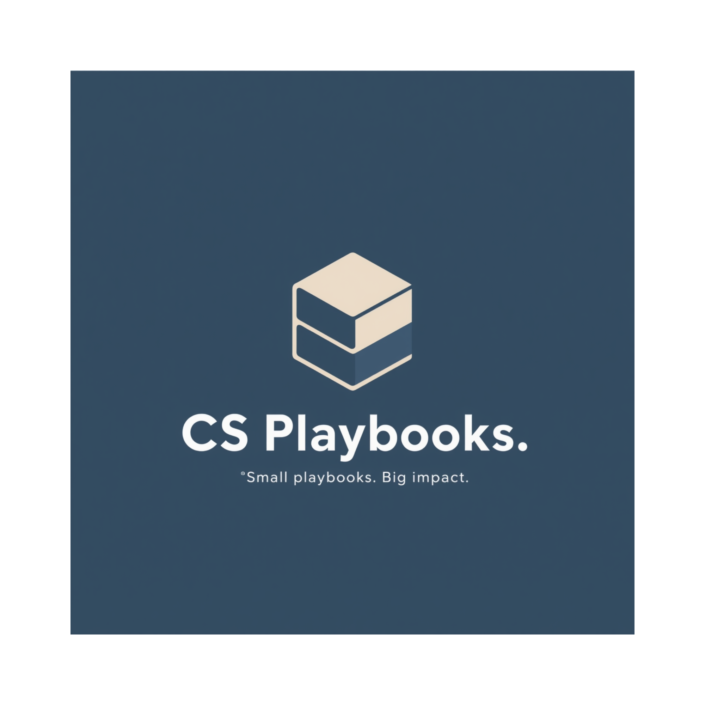

Customer Success Manager | Building Tools for Operational Empathy
20 years in payments, B2B SaaS, and utility tech. I believe in proactive partnership, outcome-driven enablement, and trust through transparency.
I've spent most of my career on both sides of the table. I've been the customer struggling with integrations, compliance headaches, and unclear communication. Now I'm the CSM who gets it because I've lived it.
My approach is grounded in operational empathy: I don't just manage accounts, I solve real problems with context and clarity. Whether it's AR automation, utility payment processing, or fintech workflows, I bring domain expertise and a builder's mindset to every engagement.
AI-powered tool that generates customized customer success playbooks. Built to streamline onboarding workflows and provide CSMs with structured, actionable guidance tailored to their accounts.
Interactive workbook based on Chad Horenfeldt's strategic customer success framework. Includes collapsible sections, export functionality, and guided exercises for building CS strategy.
Interactive toolkit for strategic SaaS customer success managers. Built with practical resources and frameworks for daily CSM work.
A comprehensive reference document covering five signal categories with weighted signal tables, risk tier thresholds, and prioritized action recommendations. Built for use in QBRs, CRM health scoring, and onboarding checkpoints.